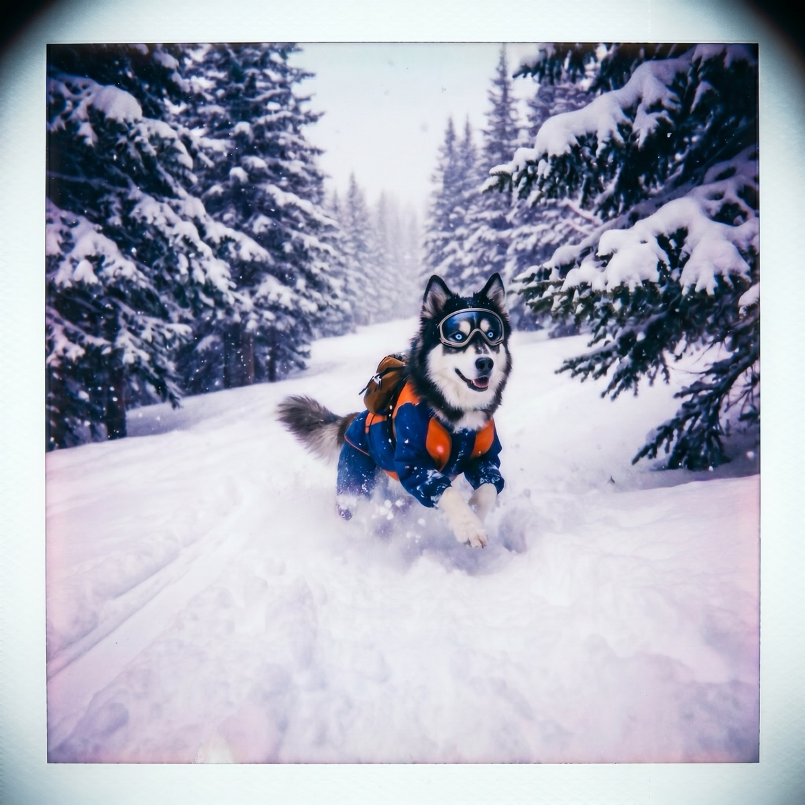

Wind Chill and Dogs: What That "Feels Like" Number Really Means
The thermometer says 30 F, so you figure your dog is fine for a long walk. Then you step outside into a stiff wind and it feels closer to 15. Your dog feels that difference too, and on windy days the feels-like number is the one that should be making your walk decisions.
What wind chill actually is
Wind chill is not a made-up number weather apps invented to scare you. It is a measure of how quickly a body loses heat when wind and cold work together. The National Weather Service wind chill chart shows how dramatic the effect gets: a 30 F day with a 25 mph wind feels like 16 F, and at 15 F with the same wind, exposed skin can develop frostbite in about 30 minutes.
The key idea is heat loss, not air temperature. Wind does not make the air colder. It makes warm bodies lose their heat faster, and that applies to a dog trotting down the sidewalk just as much as it applies to you.
Why wind cuts through a dog's coat
A dog's coat works a lot like a puffy jacket. The fur traps a thin layer of air right against the skin, the dog's body warms that layer, and the warm layer becomes insulation. On a calm day, even a modest coat holds onto that warmth reasonably well.
Wind ruins the trick. Every gust pushes through the fur and strips away that warm boundary layer, forcing the body to heat a fresh layer of cold air over and over. The harder the wind blows, the faster the heat drains. That is why a dog who happily sniffed around the yard on a calm 25 F morning may start shivering within minutes on a gusty 35 F afternoon. The thermometer went up, but the heat loss went up more.
Wet weather stacks on top of this. Damp fur loses most of its insulating power, so a cold wind plus rain or slushy snow is the fastest route to a genuinely cold dog.

Use feels-like, not the raw temperature
For walk planning, treat the feels-like number as the real temperature. If your app says 34 F but feels like 19 F, plan the walk as if it were 19 F, because for heat loss purposes it is. That usually means a shorter route, a brisker pace, and more attention to how your dog is acting.
Where is the line? There is no single number for every dog, but the American Kennel Club's guidance on cold and hypothermia is a sensible framework: most dogs handle temperatures above 45 F without trouble, small or thin-coated dogs need caution below about 32 F, and once the feels-like reading drops into the teens, keep outings short and purposeful for nearly everyone. We break down the full ranges in our guide to safe cold-weather temperatures for dogs.
And watch the dog, not just the number. Shivering, a tucked tail, lifting paws off the ground, or lobbying hard to turn around all mean the walk is over, whatever the forecast says.
Breed, coat, and size change the math
Wind chill does not hit every dog equally:
- Double-coated northern breeds (Huskies, Malamutes, Samoyeds) have a dense undercoat that resists wind far better than average. They still have limits, but they are the last to feel a gusty day.
- Short single coats (Boxers, Pit Bulls, Vizslas, Greyhounds) lose their boundary layer almost immediately. For these dogs, wind chill is the whole ballgame.
- Small dogs have more surface area relative to body mass, so they shed heat faster in any wind. They also live closer to the ground, where snow and wind-driven cold sit.
- Puppies, seniors, and lean or ill dogs regulate body temperature less efficiently and deserve the most conservative call.
The American Veterinary Medical Association makes the point plainly: cold tolerance varies so much between pets that owners should adjust to the individual animal, not to a one-size-fits-all rule.
Gear that blunts the wind
Since wind chill works by stripping warm air away, anything that blocks wind helps a lot. A well-fitted, windproof jacket does more for a short-coated dog on a gusty day than a thick but loose sweater, because it keeps that boundary layer sealed in. Our roundup of the best dog winter coats covers windproof options by size and coat type. Paws take their own beating from cold ground, ice, and salt, and a good set of winter booties handles what a jacket cannot reach.
Make the feels-like check a habit
The raw temperature is what everyone quotes, but the feels-like reading is what your dog actually walks through. Check it every time wind is in the forecast, and check it again before the evening walk, since wind chill often gets nastier after sunset. This is one place WeatherPets quietly earns its keep: your own pet delivers the day's conditions each morning, and a Live Activity tracks the feels-like number in real time, so the "is it too cold right now?" question answers itself before the leash comes out.
Cold days are still great dog days. Wind just changes the budget, and the feels-like number tells you exactly how much.